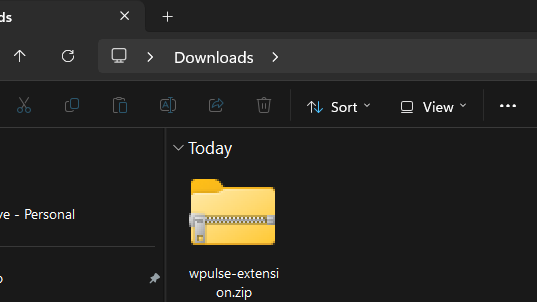
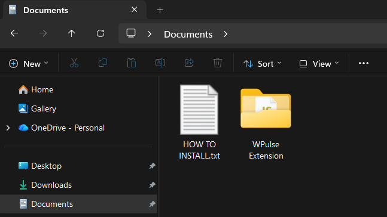
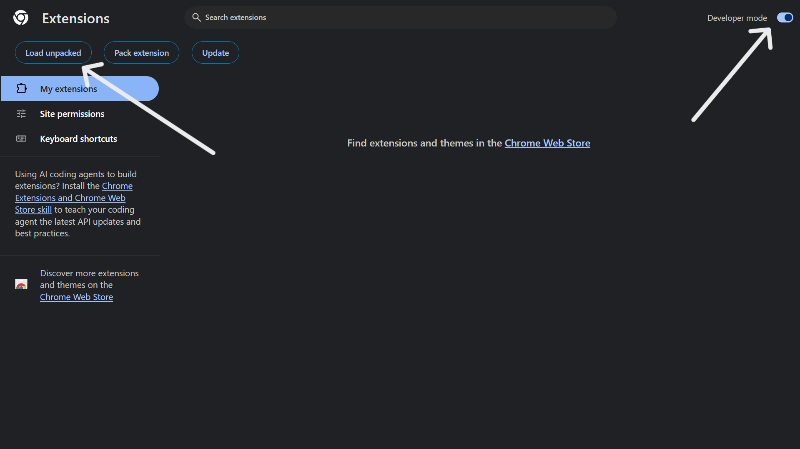
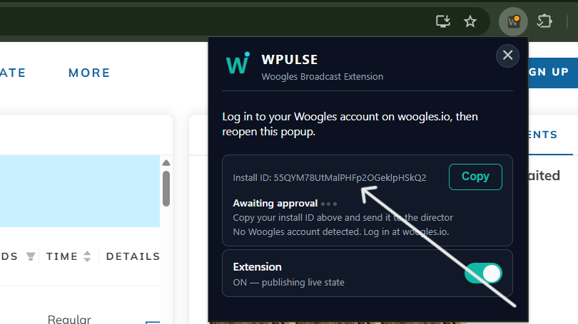
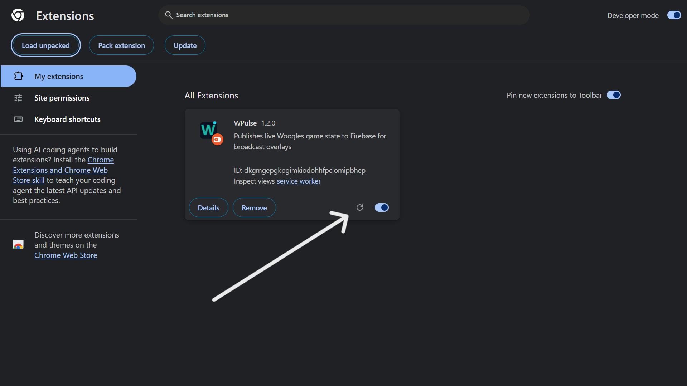
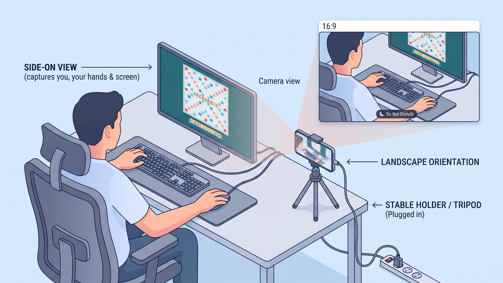
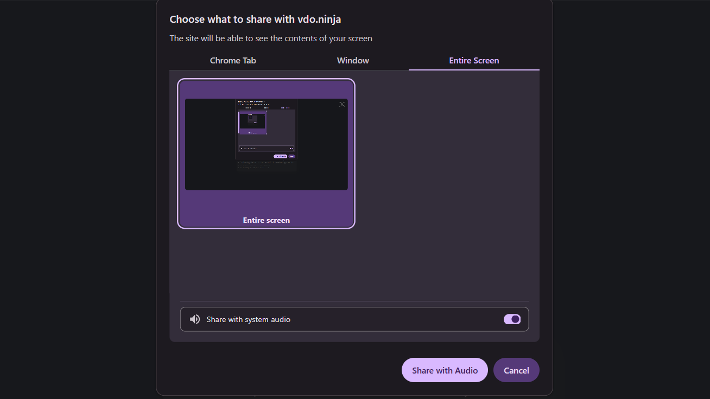

For players: apply, rules and setup
Everything below is for players taking part in WPulse duels: how to apply, the fair-play rules, camera and recording conditions, installing the extension, and match-day setup.
Apply to play
Love Scrabble? You're already qualified to apply! All skill levels are welcome, with selection based on match arrangements and availability.
What to send
To apply, message the organizer by email or Discord (see Contact) with:
- your name or preferred display name
- your Woogles.io username
- your availability and time zone
- your published rating or approximate playing level, if any
A published rating isn't required for every match.
What happens next
Selection
Applying doesn't guarantee selection.
Confirmation
Selected players receive match details, rules, setup and recording requirements before confirming.
Approval
You must complete the setup checks and get approval before playing.
Fair play and the proctor
WPulse Duels are monitored to help maintain fair competition. Players must follow these rules, the conditions announced for their match, and the Woogles.io Terms of Service and fair-play rules.
RequiredYour full screen and your camera with audio, on for the whole game, with you in view. Notifications off. Technical checks done at least 30 minutes before the scheduled stream start.
ProhibitedEngines and word-finding tools, other Scrabble or word-checking tabs and programs, other devices for the game, watching or listening to the stream, anyone assisting or seen next to you, messaging or calling about the game, headphones and earbuds.
RecordedEvery WPulse match is recorded. Player camera feeds are used in the public broadcast. Screen feeds are used for proctoring only and are not shown in the public broadcast.
Required: setup and equipment
What players do
Share your full screen, and your camera with audio, using the links the organizer sends you. See Match-day setup for how.
- Turn off all notifications before the match. They can appear on your shared screen.
- Keep your full screen shared and your camera on, with you in view, for the whole game.
Your screen and camera links are sent to you personally by the organizer. They are not on this page.
What you need
- A laptop or desktop computer with Google Chrome
- A phone with a working front camera
- A phone holder or tripod, and a charger
- A stable internet connection
Test before your duel
- Your hands and screen are clearly visible on the phone camera.
- Your entire screen is being shared.
- Notifications are off.
Lighting and room
Play in a well-lit room so the proctor can see you clearly.
Prohibited: what is not allowed
Standard competitive matches are engine-free.
- No tabs or programs on your PC related to Scrabble or word checking (other than the Woogles game itself).
- No engines, word-finding or word-lookup tools, and no asking anyone for move assistance (unless it is an announced engine-assisted demonstration).
- No watching or listening to the stream while you play, and no using the live broadcast or another account to get help.
- No one else may assist you, and no one may be seen next to you during a game.
- No other device may be used to look up words, analyse the position, or anything else related to the game. A phone used as your camera is fine.
- No messaging or calling anyone about the game while it is in progress.
- No headphones or earbuds.
Match-day communication and check-in
What the proctor does
The proctor monitors the camera and screen feeds, checks that the announced rules are followed, and reports technical issues or possible violations to the organizer. The proctor and organizer are different people: only the organizer makes event decisions, including pauses and penalties.
When to be ready before a duel
Players must complete the required technical checks at least 30 minutes before the scheduled stream start. If you expect to be late or experience a technical problem, contact the organizer immediately (by Discord or email, see Contact). The organizer decides whether to delay, reschedule, or proceed.
Match-day communication
On match day, all communication with players goes through the chat box in your VDO.Ninja screen share window. Keep that window open so you can see messages.
- Starting your match: The organizer or a commentator will confirm in the chat when you can begin. Wait for this go-ahead before you start.
- Setup help: The proctor may message you in the same chat if there is any issue with your camera, screen share or setup. You can reply there too.
- One channel: Before match day, use the contact details at the bottom of this page. On match day, the chat box is the only channel.
Disconnections and technical problems
Notify the proctor or organizer immediately. The proctor reports the issue, but only the organizer can authorize a pause. Wait for the organizer's instructions before resuming or taking further action. The organizer decides whether to resume, continue, restart, reschedule, or otherwise handle the match.
Incorrect game settings
Check the game settings against the match announcement before play begins. Report any mismatch to the organizer immediately. The organizer decides how to proceed based on the circumstances.
Engine-assisted demonstrations
Engine-assisted demonstrations are separate from standard competitive matches. They must be clearly labelled, nonrated and announced in advance, must have the explicit agreement of both players, and must comply with Woogles.io's rules. Unrated does not mean engines are allowed. Unless a match is announced as an engine-assisted demonstration, the engine-free rules apply.
Camera, screen sharing and recording
Standard competitive matches require a working player camera feed and agreement to the announced public camera and recording conditions before a player is scheduled. The organizer provides this information before asking a player to confirm. Players who refuse the public camera requirement cannot play the standard competitive format.
The organizer sends each player their camera and screen-sharing links. The proctor uses these feeds to monitor the match. Match footage will be used for YouTube livestreams and replays, short clips and highlights, and player camera feeds during broadcasts. Screen feeds are used for proctoring only and are not shown in the public broadcast.
Every WPulse match is recorded and may be reviewed if a technical issue, complaint or fair-play concern needs to be assessed. Recordings are retained indefinitely unless there is a reason to delete them, and access to raw recordings is restricted to the organizer unless another person is specifically authorized. Before confirming participation, players are told how their feeds and recordings will be used.
Published footage and removal requests
Published match footage is normally retained. To request removal or restriction of specific footage, contact the organizer (by email or Discord). Requests are reviewed case by case and removal is not guaranteed; the organizer may consider factors such as privacy, safety, legal requirements or a significant error. Raw recordings and published videos are treated separately: removing a published video does not automatically delete raw recordings or other copies. By accepting a match invitation, you confirm that you agree to the announced camera, broadcast and recording conditions. Contact the organizer before accepting if you have a question or concern.
Allegations and penalties
If a fair-play concern is raised, the organizer reviews the available evidence, gives the player a chance to explain where appropriate, and documents the decision. An allegation alone is not proof of a violation. Any action depends on the evidence, the seriousness of the issue and the circumstances. Possible outcomes include a warning, a game or match loss, rescheduling, or disqualification, but none of these is automatic. These are WPulse event decisions; Woogles.io may apply its own rules or penalties independently.
The rules may be updated as the series develops. Players will be informed of the rules applicable to their match before they confirm participation.
Install the extension
Follow the steps in order. It takes about 5 minutes.
What the extension does
The WPulse extension is a small Chrome add-on that runs only on Woogles.io. While you play, it reads the game information that Woogles already shows on your screen and passes it to the WPulse stream overlay, which is how viewers see the match live.
Your Woogles game
WPulse extension
Stream overlay
What it reads
The board, your rack, scores, clocks and moves as they appear on Woogles.
What it doesn't do
No playing moves, suggesting words or interfering with your game. It only runs on Woogles.io and never reads your password.
Who needs it
Only the two players, one extension each. Data sharing starts after the organizer approves your install ID.
-
Download the extension
Download the WPulse extension (a .zip file).
Download extensionVersion: 1.2.0 · Updated: 28 Oct 2026

-
Unzip to a folder that stays in place
Right-click the zip and choose Extract All. Keep the extracted folder somewhere permanent, such as
Documents. Do not move or delete it afterwards, or the extension will stop working.The zip also contains a file called
HOW TO INSTALL.txtwith the same steps.
-
Load it into Chrome
In Chrome, type
chrome://extensionsin the address bar and press Enter. Then:1. Turn on Developer mode (top right).
2. Click Load unpacked.
3. Open the extracted folder, then select the inner folder calledWPulse Extension(the one that containsmanifest.json), not the outer folder.Tip: if Chrome says "Manifest file is missing", you picked the outer folder. Go one level deeper.

-
Find your install ID
Go to woogles.io, then click the WPulse icon in the Chrome toolbar. Your install ID is shown in the popup. (Tip: click the puzzle-piece icon and pin WPulse if you cannot see it.)

-
Send your install ID and wait for approval
Send your install ID directly to the organizer. You can use either of these contacts:
- Email: wpulsegaming@gmail.com
- Discord: wpulsegaming
Send these three things in one message: your install ID, your name, and your Woogles username(s).
Then wait to be approved. The organizer will confirm when you are set.
-
If Chrome shows a developer mode notice
When Chrome starts, it may show a message about disabling developer mode extensions. Dismiss it. Do not remove the extension.
-
Camera and screen-share links
You will receive your links from the organizer: one for your phone camera feed and one for your computer screen share. See Match-day setup for how to use each one.
How to update WPulse
When a new version is released, follow these steps.
-
Download the new zip
Download it from the Install the extension section of this page. Check the Version line to make sure it is newer than yours.
-
Replace the old folder
Close your Woogles tab. Delete the old extracted folder, then extract the new zip to the same place as before (the same folder location).
-
Refresh the extension
Open
chrome://extensionsand click the refresh button (the circular arrow) on the WPulse card. Do not remove the extension.
-
Reload Woogles
Reload your Woogles tab.
Your install ID stays the same, so you do not need to be approved again.
Match-day setup
During a duel, the proctor watches two feeds from you: your phone camera and your computer's full screen. Set both up using the links the organizer sends you.
Phone camera
- Put your phone in landscape position on a stable holder or tripod, and plug it in.
- Place it to your side, away from your computer, so it clearly shows you, your hands and your screen.
- Switch on Do Not Disturb so notifications do not appear.
- Open your camera link on the phone. Choose the front camera and the default microphone, then start.
- Keep the browser tab open on the phone for the whole duel.

Screen share
- Open your screen share link on your computer.
- Choose to share your entire screen (not a tab or a window).
- Select the screen where Woogles is running and turn on "share audio". Audio sharing is required.
- Start sharing, then minimize that window. Do not close it.
